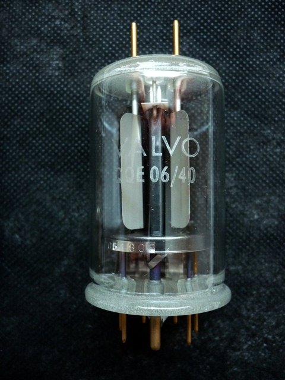
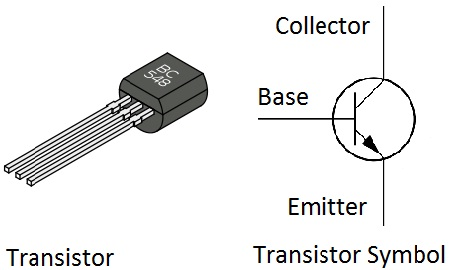

Repeat from last week: Document Flow
Document flow refers to the way the browser positions elements on the page.
In general, the browser starts at the top left of the page and starts placing elements one after another.


Floated elements remain a part of the flow of the web page.
.something {
float: right;
}
It can be left, right, none or inherit.
Repeat: Clear - what is this?
Elements after a floating element will flow around it. To avoid this, use the clear property.
The clear property specifies on which sides of an element floating elements are not allowed to float.
Further reading
css-tricks.com/all-about-floats
(old but good article)
My opinion: floats are a bit weird, and it can be hard to get
them to do what one has in mind. There are wizards out there
that achieve complicated effects, but I am not one of them. It
sometimes helps me to think of their origin in print layout.
For complicated layouts, there is a new thing called Flexbox.
css-tricks.com/snippets/css/a-guide-to-flexbox.
Much easier! And browser support is finally good.
Something completely different
Binary!
Something completely different
Binary!
Write powers of 2 on board
Something completely different
Binary!
Write powers of 2 on board
How high can you count with one hand? With two?
Fundamentals of computing
In the beginning there was something like this

which was replaced by this:

Fundamentals of computing
With two transistors, you can build a Flip-Flop

... which can store a single bit!
Fundamentals of computing
Modern chips condense millions of those into one black box:
Bit and Byte
A bit is either 0 or 1.
A byte are eight bits. It can represent a
number from 0 up to 255.
A kilobyte (KB) are 1024 bytes.
A megabyte (MB) are 1024 kilobytes.
A gigabyte (GB) are 1024 megabytes.
CSS colors
CSS uses three bytes to set a color. One for red, one for green, one for blue.
rgb(15, 128, 255)
another way to write it is hexadecimal
#0f80ff
CSS colors
CSS uses three bytes to set a color. One for red, one for green, one for blue.
rgb(15, 128, 255)
another way to write it is hexadecimal
#0f80ff
# 0f 80 ff
Hexadecimal uses 16 instead of 10 "digits": 0 1 2 3 4 5 6 7 8 9 a b c d e f.
So a in hexadecimal corresponds
to 10 in decimal, f
to 15 in decimal. ff in hexadecimal
is 255 in decimal.
Homework
Count with your hand in binary up to 31
::before and ::after
With this so called pseudo element, you can add content before or after an element through CSS
For example this html
<p class="fact">I know how to code.</p>
When adding this CSS
.fact::after {
content: "Really!";
}
it becomes:
I know how to code. Really!
::before and ::after
And with this CSS
.fact::before {
content: "Listen to me:";
}
.fact::after {
content: "Really!";
}
it becomes:
Listen to me: I know how to code. Really!
::before and ::after
You can also set empty content and style instead
.fact::before {
content: "";
display: inline-block;
border: 5px solid red;
width: 1rem;
height: 1rem;
position: relative;
top: 0.1em;
}
Result:
I know how to code.
::before and ::after
What can it be used for?
For example, small visual improvements. No need to put it in HTML.
E.g. a small arrow before each link. Example: www.deka.de
Or to set the clear property to control float.
::before and ::after
Exercise with float and ::after - build a page that looks like this:
The boxes should float to the left.
clear should
be applied using ::after.
On mobile
How does your site look on a mobile phone?
Navigate to the public URL of your neocities site (if
your phone doesn't have internet, ask your
neighbour)
On mobile
Not so great - the text is very small
Add this HTML in head:
<meta name="viewport" content="width=device-width, initial-scale=1">
A common way to make websites look OK on mobile.